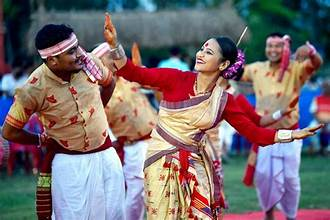
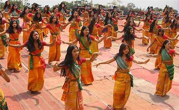
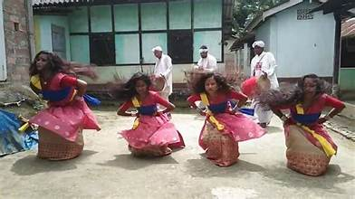
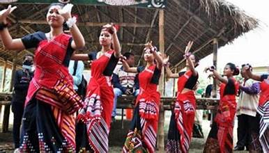
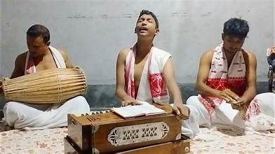

🎭✨ Dance and Music of Assam – Essence of Tradition and Elegance 🎶🕺
💃 Traditional Dance Forms – Rhythms of Assamese Heritage

Bihu Dance –
The most famous folk dance of Assam, performed during the Bihu festival.
Dancers in colorful costumes showcase vibrant movements celebrating nature and harvest.
Sattriya Dance –
A classical dance form that originated in the Satras of Assam.
The dance depicts stories from mythology through graceful and rhythmic movements.


Bagurumba Dance –
A graceful dance performed by the Bodo tribe, inspired by nature.
Dancers imitate the movements of birds, butterflies, and the flow of rivers.
🕺 Ritual and Folk Dances – Spirituality and Celebrations

Deodhani Dance –
A spiritual dance performed to appease Goddess Manasa.
Dancers often enter a trance-like state while performing.
Ali-Ai-Ligang –
A spring festival dance performed by the Mishing community.
The movements symbolize the sowing and harvesting of crops.

🎶 Traditional Music – Melodies of Assam
Bihu Songs –
Folk songs sung during the Bihu festival, expressing love, joy, and nature.
Accompanied by traditional instruments like the dhol and pepa.

Tokari Geet –
A form of narrative music accompanied by the string instrument ‘Tokari’.
The songs often narrate folklore and myths of Assamese culture.
Borgeet –
A spiritual form of classical music composed by Srimanta Sankardev.
These devotional songs invoke a sense of divine peace and tranquility.
